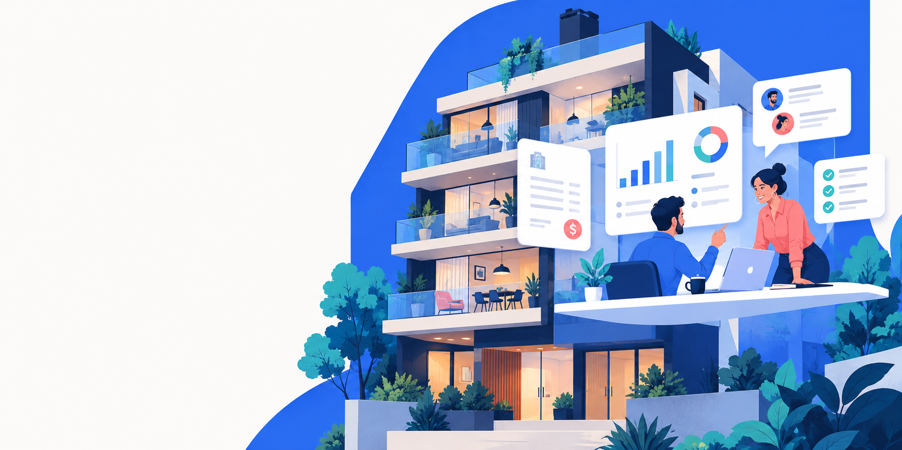

⌁
Conciliación bancaria por IA
Relacioná movimientos bancarios con cobranzas y encontrá coincidencias sin revisar operación por operación.
Endor conecta cada documento, conversación y movimiento para que administrar sea más claro, ágil y humano.
Quiero conocer EndorConocer la IA
Endor entiende la información de tu administración y la convierte en acciones concretas, con el contexto de cada consorcio.
Relacioná movimientos bancarios con cobranzas y encontrá coincidencias sin revisar operación por operación.
La información clave se extrae de cada comprobante para que revises, clasifiques y registres con menos carga manual.
Endor lee correos, identifica su intención y ayuda a preparar respuestas claras, consistentes y en contexto.
Toda la operación del consorcio, conectada en un solo lugar. Sin archivos dispersos ni tareas que se pierden entre mensajes.
Consultá gastos, liquidaciones, proveedores o facturas. Endor encuentra la información y te muestra de dónde sale cada respuesta.
Conocé cómo Endor puede acompañar el día a día de tus consorcios.